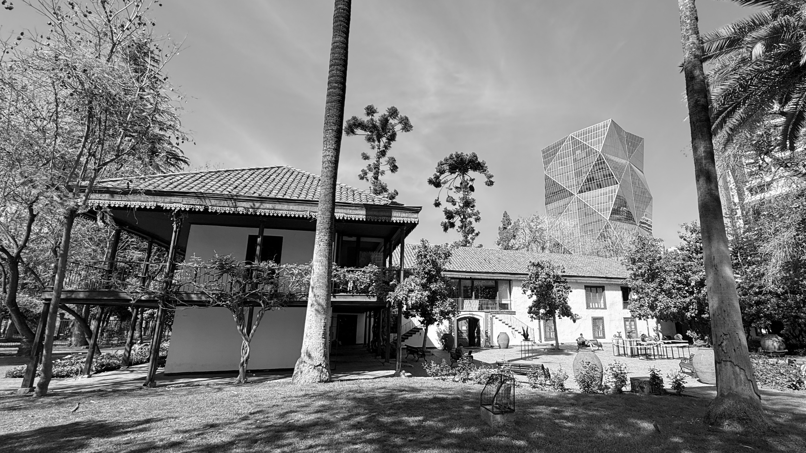
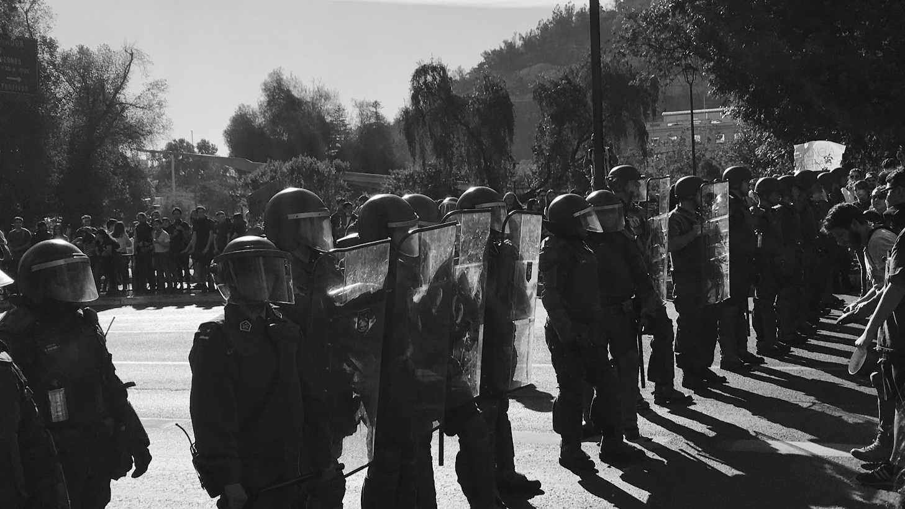

Llegué a Santiago provinciano y Martín Rivas...
I came to Santiago as an outsider like Martín Rivas...
Manuel García · La gran ciudad
Martín Rivas is the protagonist of Alberto Blest Gana's classic 1862 novel, a provincial man arriving in Santiago to start a new life. The massive Bicentennial Flag represent the imposing apparatus that greets newcomers.
Plaza de la Ciudadanía / Bandera Bicentenario Santiago Centro 33.4438° S, 70.6538° W

Dicen que el tiempo guarda en sus bastillas las cosas que el hombre olvidó...
They say time keeps within its hems the things mankind forgot...
Fernando Ubiergo · El tiempo en las bastillas
The inner courtyards of La Moneda, Chile's presidential palace, project a serene continuity that contrasts with the building's turbulent political history.
Patio de los Naranjos, La Moneda Santiago Centro 33.4430° S, 70.6539° W

Quién me ayudaría a desarmar tu historia antigua, y a pedazos volverte a conquistar...
Who would help me take apart your ancient past, and piece by piece win you back again...
Santiago del Nuevo Extremo · A mi ciudad
Colonial estates like this one in Las Condes have been absorbed by the sprawling metropolis, standing as manicured relics of a bygone agrarian era amid the modern city.
Centro Cultural Las Condes (ex-Casona Chacra El Rosario) Las Condes 33.40619° S, 70.5618° W

Yo no sé si volveré a verlo libre y gentil. Solo sé que sonreía camino a Til-Til.
I don't know if I'll see him free and noble once more; all I know is that he went with a smile on his way to Til-Til.
Patricio Manns · El cautivo de Til-Til
Manuel Rodríguez, a mythologized guerrilla hero of Chilean independence, was assassinated near this spot in Til-Til. He remains a potent symbol of national identity and popular resistance.
Monumento a Manuel Rodríguez (Camino a Til-Til) Til-Til 33.1153° S, 70.9269° W

Santiago del ochocientos, para poderte mirar...
19th century Santiago, if I could look upon you...
Violeta Parra · Santiago, penando estás
Diego Portales was the austere architect of the 1833 Constitution, establishing the centralized state order that fundamentally shaped Chile's institutional character.
Estatua de Diego Portales, Plaza de la Constitución Santiago Centro 33.4413° S, 70.6541° W

Y en una hermosa plaza liberada...
And in a beautiful liberated plaza...
Pablo Milanés · Yo pisaré las calles nuevamente
Written by the Cuban songwriter about returning to a democratic Santiago, this song captures the enduring political weight of La Moneda and its surrounding plazas.
La Moneda Santiago Centro 33.4436° S, 70.6539° W

Y si miras de lo alto hacia el valle, lo verás que lo baña un estero...
And if you look from on high towards the valley, you'll see that it's bathed by a river...
Los Huasos Quincheros · Si vas para Chile
From the heights of Cerro San Cristóbal, Santiago appears as a picturesque and unified valley, beautifully framed by the surrounding geography.
Plaza Tupahue, Parquemet Providencia 33.4159° S, 70.6219° W

Ya la aurora no es nada nuevo
Dawn holds no novelty now...
Eduardo Gatti · Los momentos
The EMPART towers in Providencia are emblems of mid-century modernist optimism and state housing, standing out amid the rapid commercialization of the surrounding avenues.
Torres EMPART (UVP), Av. Providencia con Carlos Antúnez Providencia 33.4270° S, 70.6153° W

Mira hacia el cielo y olvida ese lánguido temor que fue permanente emoción
Gaze at the sky and let go of the languid dread that lived as an endless thrill
Los Jaivas · Mira Niñita
Perched on the Andean foothills, the Bahá'i Temple offers a space of ethereal tranquility, contrasting with the dense urban sprawl spreading below it.
Templo Bahá'i de Sudamérica Peñalolén 33.4766° S, 70.5118° W

Bajo el rostro nuevo del cemento vive el mismo pueblo de hace tiempo
Beneath the new face of concrete, the same folk endure...
Illapu · Vuelvo
The hyper-dense residential towers of Estación Central represent a rapid wave of real estate development, dramatically altering the traditional scale of the neighborhood.
Av. María Rozas Velásquez con calle Pudahuel (zona 'guetos verticales') Estación Central 33.4531° S, 70.7060° W

De este viaje, por nuestra historia, por los conceptos
Of this journey, through our history, through the concepts
Schwenke & Nilo · El viaje
The Santiago Metro is the circulatory system of the city. Its stations often double as subterranean galleries showcasing national identity and history.
Estación La Moneda Santiago Centro 33.4450° S, 70.6555° W

Una preciosa entrada de autos esperando un Peugeot
A beautiful driveway waiting for a Peugeot
Víctor Jara · Las casitas del barrio alto
Vitacura is one of Santiago's wealthiest municipalities, known for its pristine residential architecture and highly manicured commercial spaces.
Youtopia (Av. Monseñor Escrivá de Balaguer) Vitacura 33.3824° S, 70.5823° W

Levántate y mira la montaña; de donde viene el viento, el sol y el agua
Arise and look at the mountain; from where the wind, the sun, and the water come
Víctor Jara · Plegaria a un labrador
The towering statue of the Virgin Mary on Cerro San Cristóbal watches over the city from one of its highest central vantage points, a constant presence above the smog.
Cerro San Cristóbal Providencia 33.4254° S, 70.6332° W

De la población, poca plata, mucho amor y sobra el corazón.
From the neighborhood, little money, a lot of love, and heart to spare.
Arte Elegante · Nos Jugamos La Vida
Poblaciones like 'La Caro', working-class neighborhoods formed by land occupations and state housing initiatives, embody the resilience of the urban periphery.
Población José María Caro ('La Caro') Lo Espejo 33.5059° S, 70.6848° W

Miren cómo nos hablan del paraíso...
Look at how they speak to us of paradise...
Violeta Parra · ¿Qué dirá el Santo Padre?
During the 2019 social uprising (Estallido Social), the streets around Plaza Baquedano and Providencia became the epicenter of mass protests, leaving lasting marks on the urban landscape.
Av. Providencia con Condell (aprox.) Providencia 33.435034° S, 70.628707° W

Frágil como un volantín, en los techos de Barrancas jugaba el niño Luchín...
Fragile as a kite, on the roofs of Barrancas, little Luchín played...
Víctor Jara · Luchín
Housing projects often feature murals commemorating folk heroes like Víctor Jara. The artwork serves as a neighborhood memory bank, preserving cultural history.
Villa Universidad Católica Macul 33.4805° S, 70.5828° W

El bajo Chile anónimo.
The anonymous, lower Chile.
Portavoz · El otro Chile
The expansive open spaces and working-class neighborhoods of Peñalolén sit at the base of the Andes, a physical frontier between the sprawling city and the cordillera towering above.
Llanura con Coronel Alejandro Sepúlveda Peñalolén 33.4737° S, 70.5670° W

Cantemos todos de Arica a Magallanes...
Let us all sing from Arica to Magallanes...
Carlos Ulloa Díaz / Mario Barrientos · Himno de Colo Colo
Home to Colo-Colo, Chile's most popular football club, the Estadio Monumental in Macul is a massive concrete cauldron that serves as a powerful focal point for popular identity and passion.
Estadio Monumental Macul 33.5063° S, 70.6052° W

Cuando me acuerdo de mi país...
When I remember my country...
Patricio Manns · Cuando me acuerdo de mi país
Lo Hermida in Peñalolén has a rich history of community organization. Looking out from its streets, the city stretches endlessly toward the horizon.
Lo Hermida Peñalolén 33.4747° S, 70.5690° W

Por Pudahuel y La Bandera, por Pudahuel y por La Legua; y verías la vida tal como es...
Through Pudahuel and La Bandera, through Pudahuel and through La Legua; and you would see life as it is...
Sol y Lluvia · El largo tour
Situated high in the eastern foothills, the residential enclave of La Dehesa offers a stark contrast to the working-class communes just a few kilometers away.
Gran Vía con Camino Santa Teresa de Los Andes Lo Barnechea 33.3676° S, 70.5456° W

Y en Santiago tantas cosas...
And in Santiago so many things...
Ismael Serrano · Vine del Norte
Seen from the high vantage points of Peñalolén at night, Santiago's vast grid of lights offers a brief, beautiful illusion of a unified metropolis.
Mirador de Peñalolén Alto Peñalolén 33.4886° S, 70.5199° W

¿Qué sabes de cordillera si tú naciste tan lejos?
What do you know of the mountain range if you were born so far away?
Patricio Manns · Arriba en la Cordillera
The Andes Cordillera is Santiago's omnipresent wall. It dictates the city's climate, contains its smog, and visually dominates every eastward view.
Av. Jaime Guzmán Errázuriz con Regina Pacis (frontis Campus Oriente UC) Providencia 33.4468° S, 70.5946° W